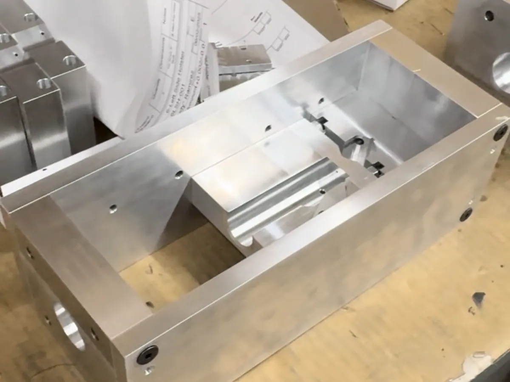
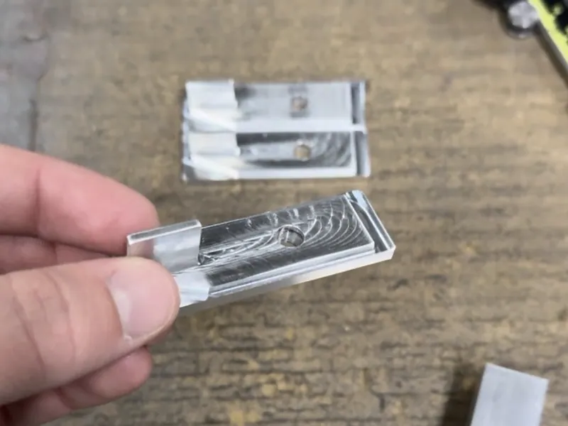
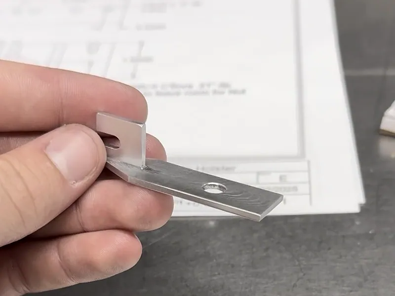
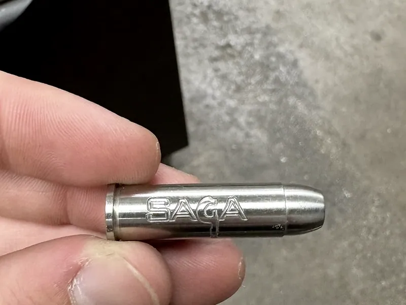

Tolerance Stack-Up Failure
Brackets that passed inspection individually would not assemble. Traced it to how tolerances stacked at the interfaces, and fixed the process without leaving the print.

Every part passed. The assembly still would not go together.
A run of aluminum brackets for a client build. Each part got measured against the drawing and each part was in spec. Then they went to assembly and would not fit.
That is a specific and slightly maddening kind of failure, because there is nothing to point at. No dimension is wrong. No part is bad. The inspection sheet says everything is fine and the hardware in front of you says it is not.
In spec and fits are two different claims. A tolerance is a statement about a population, not about a part.
The failure lived in the sum, not in any one number.
Every part was sitting somewhere inside its tolerance band. The problem was where. At the interfaces those individual deviations were landing in the same direction and adding, so a stack of parts that were each comfortably within ±0.005 in accumulated into a fit that had run out of room.
So I stopped looking at whether parts passed and started looking at where inside the band they were passing. Measuring the actual population, rather than assuming nominal, showed which dimensions were driving the fit and which ones had slack that nobody was using.
Measure the population, not the nominal
Nominal is a fiction. What matters is where real parts are landing inside the band, and whether they are all landing on the same side of it.
Find the driving dimensions
Not every toleranced feature contributes to the fit. Tracing the stack across the interfaces showed the handful that actually mattered and the ones with unused slack.
The client’s print is the spec
Anything I changed to make parts assemble still had to land inside the drawing. You do not get to relax a customer’s tolerance because it is inconvenient.
Move where the parts land, not where the limits are.
The correction was to the process, not to the drawing. Target the driving dimensions toward the favourable end of their band so the stack has room left over at the interfaces, while every feature stays inside the print exactly as drawn. The parts still pass the same inspection. They just stop conspiring against each other.
The second half was catching drift before it became a batch. Inspecting parts against the drawing as they came off, in process, means a dimension that starts walking gets caught on one part. Inspecting at the end of a run means you find it on forty.
In hindsight: the lesson I actually took from it is that inspection tells you whether a part is acceptable and says nothing about whether a set of parts will work together. Those are separate questions and they need separate checks.


Two summers of everything else a shop needs.
The bracket job was the interesting one, but most of two summers was the ordinary work that keeps a shop running: over a hundred machined aluminum components inspected daily against client drawings, CNC and manual machining to aerospace compliance specs, and reading GD&T toleranced blueprints well enough to know which callouts were going to bite.
That volume is where the intuition comes from. You learn what a process sounds like when it is drifting long before the calipers tell you.
